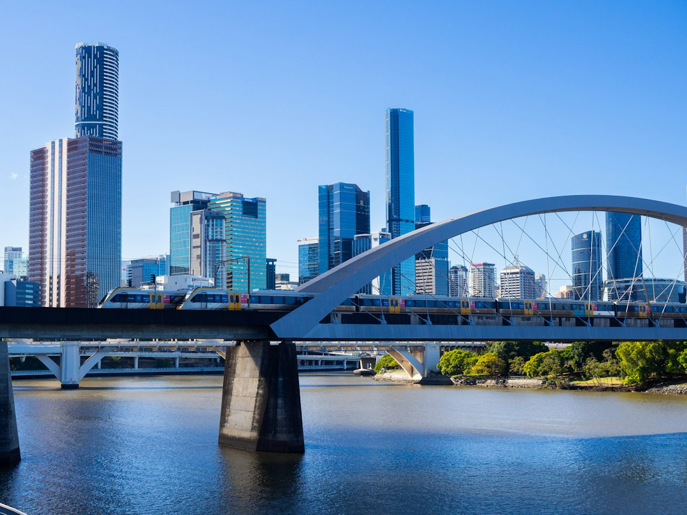

For homeowners and tenants comparing electrical services south brisbane options, the useful starting point is a clear job brief, not a guess at price before testing or inspection.
Electrical Services South Brisbane Explained
Electrician South Brisbane frames the first decision as a practical one: is something already failing, or are you changing the property? That distinction matters because a recurring trip, a dead outlet and a planned new load lead to different questions for a licensed electrician. A good enquiry should name the affected rooms, the pattern of the fault, recent changes and whether water, smell, sound or damaged equipment is involved.
For planned electrical services south brisbane work, describe the fixture, outlet, circuit or load you want changed, plus the property type and access. The source page is careful not to treat a web form as urgent dispatch. It says ordinary enquiries are for planned work and non-urgent faults, while immediate danger belongs with emergency services.
- Use 000 for electric shock, fire or fallen powerlines.
- Keep clear of damaged equipment if people may be at risk.
- For non-urgent work, explain the symptom, property setting and access before asking for a quote.
Who This Applies To
This guide applies to South Brisbane 4101 and nearby inner-south properties where someone is trying to brief a licensed contractor clearly. The source page names apartments, homes and mixed-use premises, which means access, tenancy authority and the affected area can change the conversation before materials or labour are compared.
An apartment enquiry may need building access notes and a clear statement about which room or circuit is affected. A house enquiry may focus more on the intended new fitting, ceiling access, existing circuit or whether a switchboard quote includes testing. A mixed-use premises can raise practical questions about occupied areas, access limits and how work will be scoped around the site.
Use locality only where it helps the job brief. South Brisbane, West End, Highgate Hill, Woolloongabba, Kangaroo Point, East Brisbane, Dutton Park, Annerley, Fairfield, Yeronga, Greenslopes, Coorparoo, Norman Park, Camp Hill and Morningside are named on the source page, but the useful detail is still the property and fault, not the suburb label alone.
Quote Questions That Separate Scope From Price
The source page warns that diagnosis, price and safe methods depend on the property and the work. A low headline figure is hard to compare unless both electricians inspected or allowed for the same issue. For switchboard work, ask which existing circuits were assessed, whether new protection is included, what testing follows and how a change of scope will be approved.
For smaller electrical repairs, ask whether diagnosis can be separated from optional improvements. That helps when one contractor recommends a board change and another recommends a more limited repair. If recommendations differ, ask each licensed electrician to explain what was found and what the quote includes, rather than choosing only from the final number.
- Inspection: what is checked before the quote becomes firm.
- Materials: what fittings, protection or replacement parts are included.
- Testing: what checks follow the repair, installation or upgrade.
- Scope changes: how extra work is identified and approved.
Common Job Types And The First Question To Ask
Fault finding starts with what changed and which circuit is affected. A power outage, recurring trip or unusual lighting behaviour is not automatically a switchboard replacement. The source page says a tripping safety switch should be investigated on the affected circuit and equipment before a board change is recommended.
Power point work also needs careful wording. A replacement outlet, a better position and a new circuit are different jobs, so describe the intended load and location. Lighting and ceiling fan work should include the fixture type, controls, ceiling support and access, because the page notes that a new fan or light involves more than choosing the fitting.
Smoke alarm enquiries should begin with the property and occupancy question. The source page does not set out a rule inside the body text, but it tells readers to confirm the relevant Queensland rule and future provider scope. That makes it a checklist item for the contractor conversation, not a place to guess obligations.
Before You Send An Enquiry
A concise brief can reduce back-and-forth before a licensed electrical professional decides whether the job fits their scope. Include your name, phone, email, suburb or postcode and a plain description of what needs attention. Mention access and nearby structures. The page says photos can be provided later if a provider asks for them.
Be clear about urgency. If the issue is non-urgent, describe the symptom without overstating certainty about the cause. If the work is planned, describe the outcome you want and the current setup. Submitting the form on the source page does not confirm provider availability, timing or acceptance of the work, so the next step is assessment rather than a guaranteed booking.
For a wider crawl path inside the same published guide set, the services page at South Brisbane electrical job guides is the natural place to compare fault finding, circuits, switchboards, safety switches, lighting, ceiling fans and smoke alarm topics before deciding what to ask.
- Record the situation. Write down whether this is a current fault or planned change, including affected rooms and any recent changes.
- Describe the property. Note suburb or postcode, property type, access limits and nearby structures that may affect inspection.
- Separate urgency. Use 000 for immediate electrical danger and keep ordinary web enquiries for planned work or non-urgent faults.
- Compare scope. Ask what inspection, materials, testing and change approval are included before comparing prices.
| Situation | Useful details to provide | Question to ask |
|---|---|---|
| Fault now | Affected rooms, trip pattern, sounds, smell, water exposure and recent changes | What will be tested before a repair or upgrade is recommended? |
| Planned change | New fitting or load, existing circuit, property type and access | What inspection, materials and testing are included in the quote? |
| Switchboard quote | Existing circuits assessed, proposed protection and any added loads | How will scope changes be approved if more work is found? |
| Smoke alarm question | Property type and occupancy details | Which Queensland rule applies and what provider scope is being quoted? |
This guide covers practical scoping questions for South Brisbane electrical repairs, upgrades, installations and non-urgent enquiries.